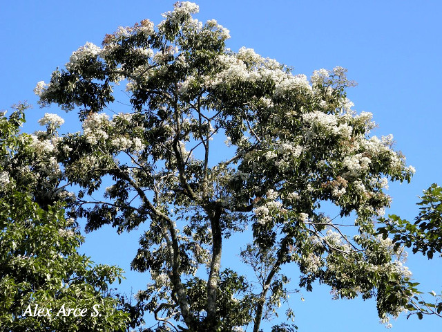
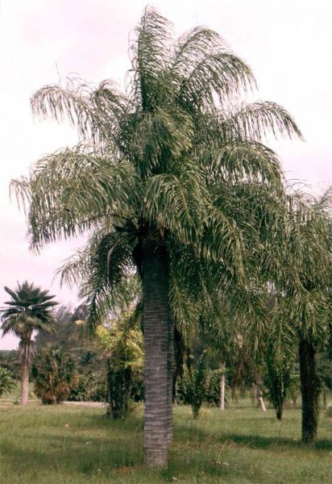
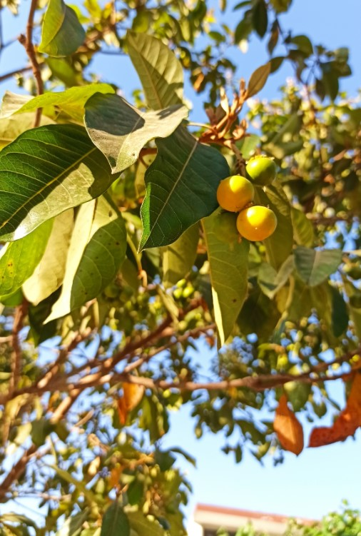
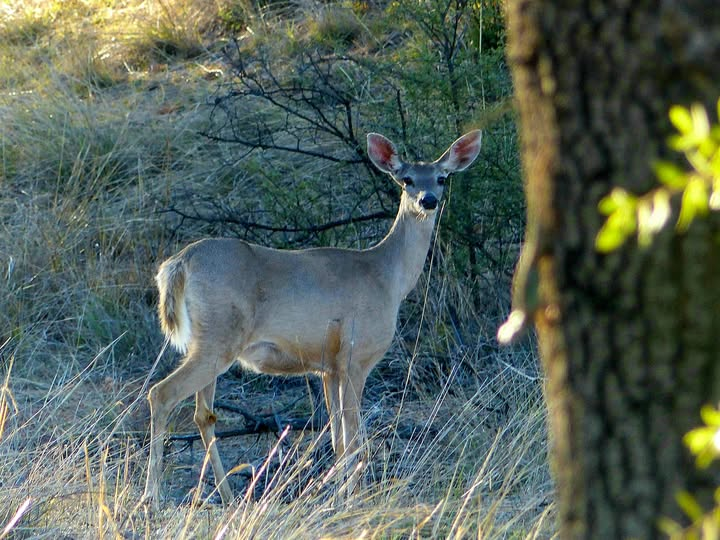
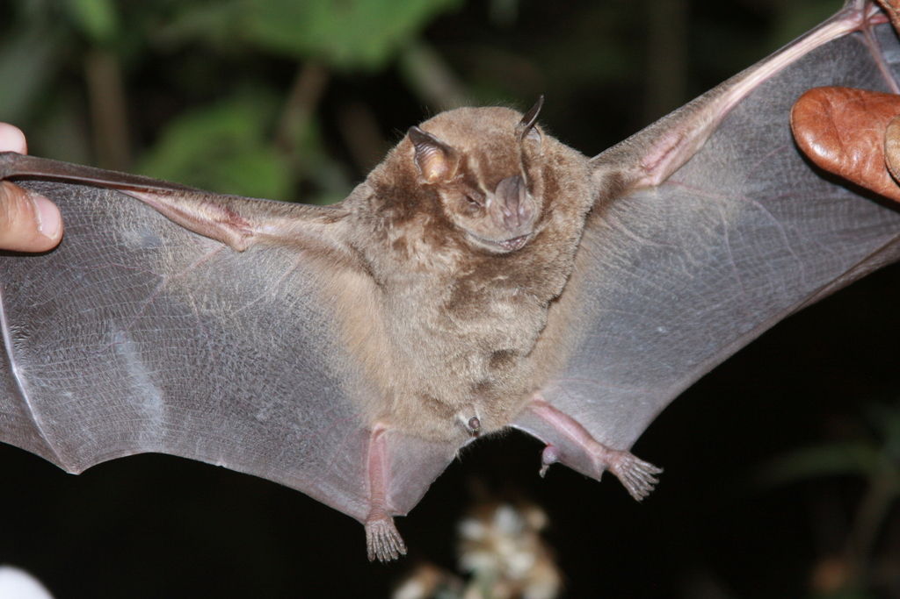
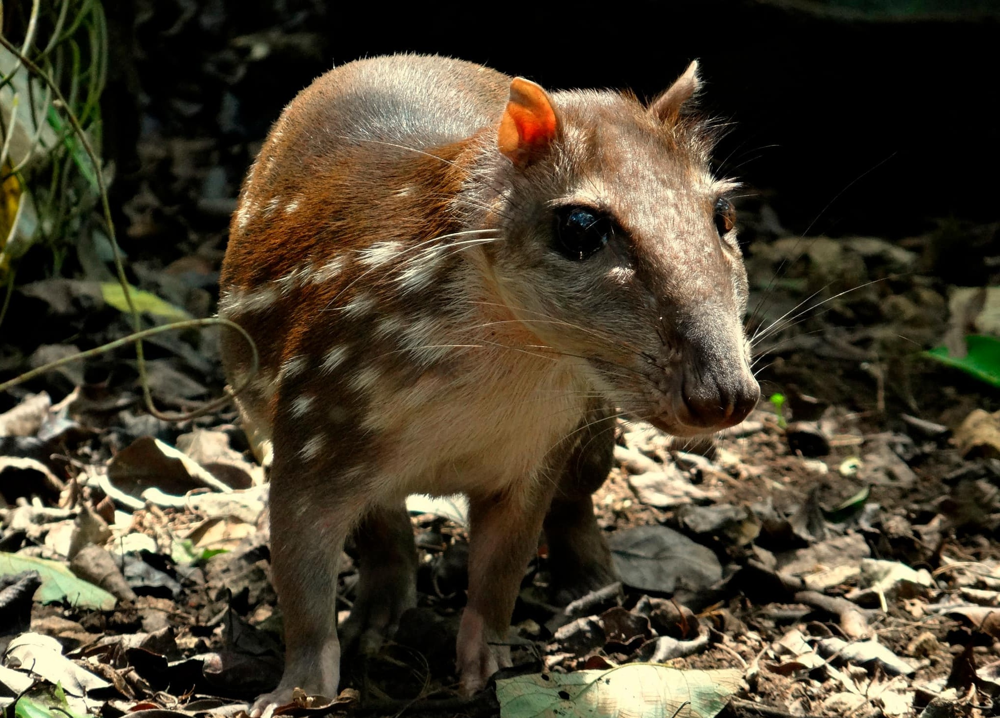

Flora del Parque

FloraÁrbol de Laurel
Cordia alliodora
Especie arbórea nativa muy representativa del bosque seco tropical del parque.
Ampliar Imagen
FloraPalma de Coyolar
Acrocomia aculeata
Palmera espinosa adaptada a las condiciones climáticas de la zona costera de El Salvador.
Ampliar Imagen
FloraÁrbol de Nance
Byrsonima crassifolia
Árbol frutal silvestre que provee de alimento clave a la fauna silvestre local.
Ampliar ImagenFauna del Parque

FaunaVenado Cola Blanca
Odocoileus virginianus
Uno de los mamíferos más grandes y protegidos dentro del área boscosa.
Ampliar Imagen
Cueva del MisterioMurciélago Frugívoro
Artibeus jamaicensis
Habitante clave del ecosistema que se refugia en la famosa Cueva del Misterio del parque.
Ampliar Imagen
FaunaTepescuintle
Cuniculus paca
Roedor de hábitos nocturnos custodiado en las zonas de mayor cobertura vegetal.
Ampliar Imagen